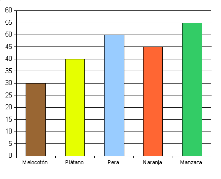
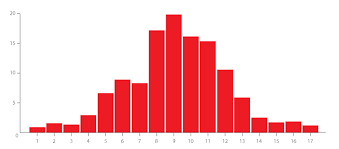
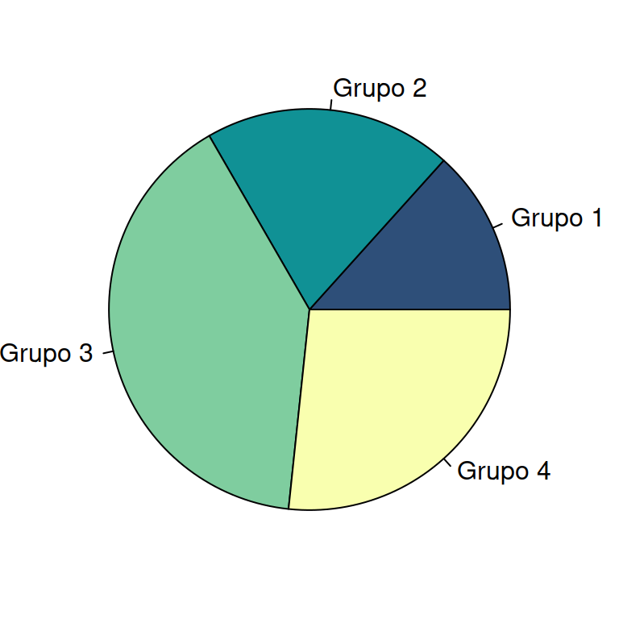
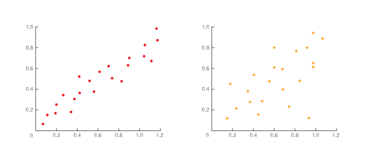

La población es el conjunto total de individuos u objetos que se desean estudiar. La muestra es un subconjunto representativo de la población.
La variable estadística es la característica que se estudia en cada individuo.
Las variables estadísticas pueden ser cualitativas o cuantitativas:
1En los siguientes enunciados identifica cuál es la población y la variable estadística a estudiar. Indica además el tipo de variable estadística en cada caso.
Una tabla de frecuencias organiza los datos estadísticos mostrando las frecuencias absolutas, relativas y acumuladas de cada valor o intervalo.
2Para los siguientes conjuntos de datos, construye la tabla de frecuencias:
Cuando los datos son numerosos o continuos, se agrupan en intervalos para facilitar su representación y análisis estadístico.
Para número de valores menores a \[n \lt 50\] tomaremos como número de intervalos \[ \sqrt{n} \] mientras que si tenemos más datos usaremos la Fórmula de Sturges: \[ \frac{log(n)}{log(2)} + 1 \]. Idealmente tendremos como mucho 15-20 intervalos.
Para determinar la amplitud de cada intervalo tomaremos su rango (es decir la diferencia entre el mayor y el menor valor) y lo dividiremos entre el número de intervalos.
3Para los siguiente conjuntos de datos, agrúpalos en intervalos y construye su tabla de frecuencias:

El diagrama de barras representa variables cualitativas o cuantitativas discretas mediante barras cuya altura es proporcional a la frecuencia.

El histograma representa variables cuantitativas continuas agrupadas en intervalos mediante rectángulos contiguos.

El diagrama de sectores representa las frecuencias relativas de los datos mediante sectores circulares proporcionales.
4Para el siguientes conjuntos de datos, completa la tabla de frecuencias y dibuja sus diagrama de barras o histograma segundo corresponda:
| xi | 1 | 2 | 3 | 4 | 5 |
|---|---|---|---|---|---|
| fi | 6 | 10 | 8 | 9 | 7 |
| Intervalos | [0,10) | [10,20) | [20,30) | [30,40) | [40,50) |
|---|---|---|---|---|---|
| fi | 5 | 9 | 11 | 8 | 7 |
Los parámetros estadísticos son medidas numéricas que resumen la información contenida en un conjunto de datos.
La media aritmética es el promedio de los datos y se calcula mediante:
\[ \bar{x}=\frac{\sum_{i} x_i \cdot f(x_i)}{n} \]
La moda es el valor de la variable que presenta mayor frecuencia absoluta.
La mediana divide la distribución en dos partes iguales. Los cuartiles dividen los datos en cuatro partes y los percentiles en cien partes iguales.
Para calcular estas medidas usaremos la frecuencia relativa acumulada.
El rango o recorrido es la diferencia entre el valor máximo y el mínimo.
El rango intercurtílico es la diferencia entre el tercer y el primer cuartil.
La varianza mide la dispersión de los datos respecto de la media y la desviación típica es su raíz cuadrada.
\[ \sigma^2=\frac{\sum_{i} (x_i-\bar{x})^2 \cdot f(x_i)}{n} \]
El coeficiente de variación compara la dispersión de diferentes distribuciones estadísticas.
\[ CV=\frac{\sigma}{\bar{x}} \]
5Para los siguientes conjunto de datos, completa la tabla de frecuencias y calcula la media, mediana, moda, cuartiles, rango, rango intercuartílico, desviación típica y coeficiente de variación:
| xi | 0 | 1 | 2 | 3 | 4 |
|---|---|---|---|---|---|
| fi | 7 | 10 | 8 | 4 | 1 |
| Intervalos | [0,10) | [10,20) | [20,30) | [30,40) | [40,50) |
|---|---|---|---|---|---|
| fi | 5 | 9 | 10 | 18 | 8 |
Una distribución conjunta estudia simultáneamente dos variables estadísticas y se representa mediante tablas de doble entrada.
6Dados los siguientes conjuntos de pares de valores, construye una tabla de doble entrada con sus frecuencias conjuntas:
Las frecuencias marginales se obtienen sumando las frecuencias conjuntas por filas o columnas.
7Construye una tabla con las frecuencias marginales del ejercicio anterior
Las frecuencias condicionadas muestran cómo se distribuye una variable cuando se fija un valor concreto de la otra variable.
8Constuye las tablas de frecuencias condicionadas que se piden teniendo en cuenta los datos del ejercicio anterior:

El diagrama de dispersión representa pares de valores mediante puntos en el plano cartesiano.
Existe dependencia lineal entre dos variables cuando los puntos del diagrama de dispersión se aproximan a una recta.
9Representa los diagramas de dispersión de los conjuntos de datos del ejercicio 6 e indica si te parece que hay dependencia lineal.
La covarianza mide la relación lineal entre dos variables estadísticas.
\[\operatorname{Cov}(X,Y) = \sigma_{xy} =\frac{\sum_{i}(x_i-\bar{x})(y_i-\bar{y}) \cdot f(x_i, y_i)}{n} \]
El coeficiente de correlación lineal mide la intensidad y sentido de la relación lineal entre dos variables.
\[ r = \frac{\sigma_{xy}}{\sigma_x \cdot \sigma_y} \]
10Calcula la covarianza y coeficiente de correlación de los siguientes conjuntos de datos:
La regresión lineal permite aproximar la relación entre dos variables mediante una recta.
Las rectas de regresión permiten estimar valores de una variable a partir de la otra.
11Calcula la recta de regresión de X sobre Y y de Y sobre X para los siguientes conjuntos de datos:
La interpolación permite estimar valores dentro del intervalo observado de datos. La extrapolación permite estimar valores fuera de dicho intervalo.